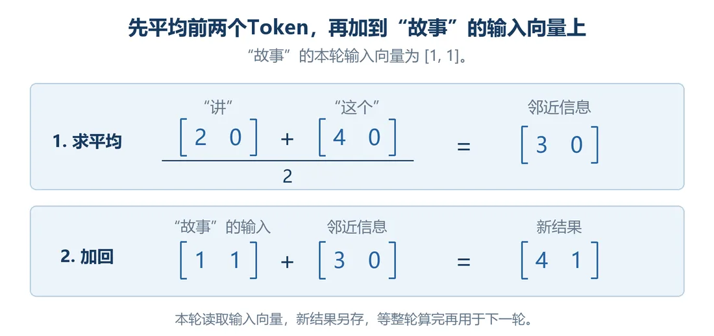
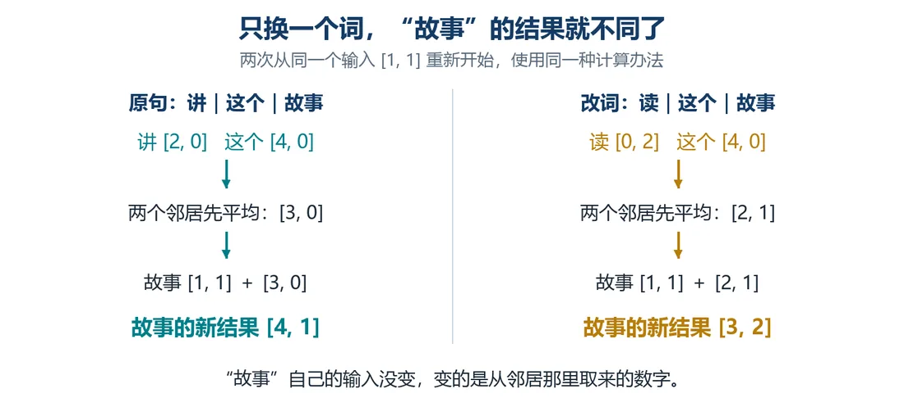

我们在这儿
前 3 篇我们把长句拆成 31 个 Token，给 Token 配起始向量，再给每个位置加上自己的位置数字，现在 31 个位置各有一行能算的数。这一篇试着让前面的词也参加计算。
这一篇要解决让前面的 Token 影响当前位置，先把邻词变化传进来。
大概阅读约 8–10 分钟
只看句尾，把“讲”换成“读”。
第 30 处还是“故事”。它查到的起始向量一样，加上的位置数字也一样，所以按上一篇的办法，“故事”的向量纹丝不动。
可前面都从讲故事改成读故事了，它还像戴着耳机，什么也没听见。
到了新工作场所，除了明白自己的岗位，还得了解跟自己有交集的同事。
对 Token 来说，要“知其位，瞻前邻”：向量里除了位置信息，还得有周围 Token 的信息。
能不能把前面几个词的向量拿过来，跟“故事”自己的一起算？
先试个笨办法：取当前位置前面两个 Token 的向量，各参考一半，也就是求个平均，再加到当前位置的向量上。
为什么只取两个？因为好算。先看前面换一个词，变化能不能传过来。
为什么先往前看？因为以后想让电脑接着写，接着写时后面的文字还没写出来，手上只有已经写好的内容。
所以这回先试试只用前面的词，能做到什么。
用“讲｜这个｜故事”算一次：

两个数各参考一半，就是把它俩加起来除以 2，得到的数正好在中间。向量求平均也一样，每一格分开算，再拼回一个向量。
这回只换第 28 处：
邻词一换，“故事”就从 [4, 1] 变成了 [3, 2]。
至于电脑能不能靠这些数分清“讲故事”和“读故事”，以后再摸索。

第 30 处算出的新向量，存到句子表 X 的第 30 行。
第 13 处那个“故事”参考的是“封面”和“的”，算完存第 13 行。
存什么每个 Token 共用的起始向量
多少行27 行
存什么每个位置对应的位置向量
多少行31 行
存什么句中各位置当前的向量
多少行31 行
上一篇从 E 查起始向量、从 P 查位置向量，相加得到 X。这次加进了前面词的线索，更新的是 X，E 和 P 照旧。
这一篇收个尾
这一篇拿到：前面两个 Token 的平均会更新当前位置，邻词变化能传进来。
下一篇接着看：研究怎么找到更远的线索。